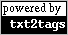

About
This document details all the new features introduced in txt2tags version 2.0. There are lots os them, read it all!
If you already use some previous version of the program, please read the Upgrade Guide first.
Big News
There are the real hotspots of the 2.0 release.
New supported target: XHTML
- XHTML was the most user requested document target, and now it is available.
- XHTML is the evolution of HTML, with more strict rules that forces the code to be more sane and readable.
- Txt2tags generates W3C approved "XHTML 1.0 Transitional" code.
- For easy identification, all XHTML tags are lowercased, and HTML are uppercased.
HTML and XHTML documents approved by W3C
- The HTML and XHTML code generated by txt2tags is approved by the W3C validator.
- W3C is the consortium that creates the Internet standards as HTML, XHTML and CSS. Being W3C-compliant is cool.
- Among other changes, now all the paragraphs are closed (</P>) and all images have the (empty) ALT attribute.
- Note that the encoding specification is mandatory to the validator
(i.e.
--encoding iso-8859-1). - The nice "W3C approved" images are included on the tarball.
- Check this page now!
User configuration file (RC)
- Now the user can store in one place the configuration to be used by ALL .t2t files.
- It is called RC file, and is handy for user customization.
- Its location is
$HOME/.txt2tagsrcin Linux and%HOME\_t2trcin Windows. - There is a sample RC file on the tarball:
doc/txt2tagsrc. - The format is exactly the same as the one used on the .t2t files
CONF area:
% my configs % always use CSS-friendly tags in HTML %!options(html): --css-suggar % change the default TOC depth for all targets %!options: --toc-level 4 % set the default encoding for all documents %!options: --encoding iso-8859-1
- The RC file reading can be disabled by the
--no-rccommand line option
New command %!includeconf
- The new
%!includeconfcommand is used to include configurations from an external file into the current one. - Useful to share the same config for multiple files.
- The format inside the included file is the same as in the RC file.
- This command is valid inside the .t2t file CONF area only.
My First Document John Doe July, 2004 %!includeconf: config.t2t Hi, this is my first document.
New command line options
| --dump-config | Shows all the configuration that was found |
| --debug | Shows debug messages when converting a document |
| -v, --verbose | Shows informative messages when converting a document |
| -i, --infile | Specify the source file (.t2t) |
| --encoding | Specify the document encoding (same as %!encoding) |
| --rc | Reads the user config file (default ON) |
| --css-suggar | Makes the code CSS-friendly for HTML and XHTML |
| --no-style | Turns off --style |
| --no-toc | Turns off --toc |
| --no-toc-only | Turns off --toc-only |
| --no-enum-title | Turns off --enum-title |
| --no-mask-email | Turns off --mask-email |
| --no-encoding | Turns off --encoding |
| --no-rc | Turns off --rc |
| --no-infile | Turns off --infile |
| --no-outfile | Turns off --outfile |
| --no-css-suggar | Turns off --css-suggar |
Optional anchor for titles
- Now you can specify an anchor name for any title (numbered or not).
- This anchor name can be used in local links, to jump to this title from any part of the document.
- This page uses anchors for all titles, check the TOC!
- The syntax to define an anchor is:
= title =[anchor]. - To link to an anchor, use
#anchor.= Step Two: Install =[steptwo] blablablablabla Please, read the [Install Section #steptwo].
The program was internationalized (i18n)
- To internationalize a program is to prepare it to be translated to other languages.
- "i18n" is the short for "internationalization".
- All the relevant messages were i18n'ed, which include:
- Error messages
- Informative messages from
--verboseoption - Output of
--dump-configoption - Graphical Interface texts
- The first language it speaks besides english is Brazilian
Portuguese:
$ txt2tags --help Uso: txt2tags [OPÇÕES] [arquivo.t2t ...] -t, --target define o formato do destino. tipos suportados: html, xhtml, sgml, tex, man, mgp, moin, pm6, txt -i, --infile=ARQ define ARQ como o arquivo fonte ('-' para STDIN) -o, --outfile=ARQ define ARQ como o arquivo destino ('-' para STDOUT) ... - See the
po/READMEtarball file for instructions on how to install the translations. - Package users (RPM, Debian, etc) don't need to install the translations by hand, it is already done.
- See the
po/READMEtarball file for instructions on how to translate the messages to your own language!
Other Great News
The heading says it all.
Graphical Interface redesigned and customizable
- New look (blue theme)
- Shows more information as the output filename, encoding and style
- Smart focus on the most used buttons
- Interface colors configurable via
%!guicolorssetting on the RC file:%!guicolors: black white white black
Web Interface improved
- Added the XHTML target
- Added a checkbox for the
--enum-titleoption - Richer default text to convert
- Resulting code in blue
- For HTML and XHTML targets, the parsed document is showed at the end
- Code updated to work on newer versions of PHP
New "txt2tags powered" button
- The old  now is
 .
.
- Cute uh?
- The idea is: The little white ball (.t2t file) can turn into nice happy colorful balls (targets) when passed thru the magic arrow (txt2tags).
- There is also the ASCII version:
O>OOOO - Come on, free your mind! ;)
Informative messages about the conversion
- Using the new
-voption, the program sends informative messages to the screen when converting a document. - The more 'v's you give, more messages appear.
- The maximum level is three:
-vvv.$ txt2tags -v -t html sample.t2t ----- Txt2tags 2.0 processing begins ----- Loading user configuration file ----- Loading source document ----- Scanning source document CONF area ----- Parsing and saving all config found (006 items) ----- We are on Command Line interface ----- Composing target Headers ----- Composing target Body ----- Composing target TOC ----- Composing target Footer ----- Saving results to the output file txt2tags wrote sample.html ----- Txt2tags finished sucessfully $
New --dump-config option
- The new
--dump-configcommand line option shows all the configurations found for a .t2t file. - It shows config of all possible sources:
- User config file (RC)
- Source document CONF area
- Command line options
- Very useful to detect configuration problems or conflicts.
- Using this option, the file is NOT converted. The information
is showed on the screen and that's all.
$ txt2tags --dump-config -t html sample.t2t RAW config for RC file (all) guicolors.....: ['blue', 'white', 'brown', 'yellow'] RAW config for source document (all) encoding......: iso-8859-1 RAW config for command line (all) infile........: sample.t2t (all) dump-config...: ON (all) target........: html (all) realcmdline...: ['--dump-config', '-t', 'html', 'sample.t2t'] Full PARSED config dump-config...: ON encoding......: iso-8859-1 guicolors.....: blue, white, brown, yellow infile........: sample.t2t realcmdline...: --dump-config, -t, html, sample.t2t sourcefile....: sample.t2t target........: html Active filters $
New mark for raw text area
- The new mark
"""can now be used to specify a raw line.""" These **asterisks** will not turn to bold.
- It can be used also to delimit a raw area.
""" These **asterisks** will not turn to bold. Neither //this// or __this__ marks will be parsed. """
- Raw is raw. No parsing is done inside it.
New %!include type for raw text
- The
%!includecommand has a new type of included file: raw text. - It is used to insert text that will not be scanned for txt2tags marks, just like raw line and raw area.
- The syntax is to double quote the filename:
%!include: ""raw.txt""
Txt2tags source code rewritten
- To support XHTML, all the tag generation schema needed to be redesigned, causing a code rewrite of the program core.
- From past experience of limitations and exceptions, all the configuration handling code was rewritten also.
- Then came the Graphical Interface, new marks, user config file, and after more than a year of spare-time-programming, the result is a cleaner, optimized and documented code.
- The news include:
- Lines breaking at column 80, with TAB size of 8
- Added lots of useful comments
- pychecker friendly (from 123 warnings to 10)
- Now it is even readable! ;)
- Almost a rewrite from scratch.
Txt2tags Python module
- The program now is also an importable Python module.
- Very handy to do customizations without changing the program source code.
- Python programmers will know what to do with this:
>>> import txt2tags >>> print txt2tags.my_version 2.0 >>>
Improvements on Targets
Man Page target (man)
- Now your man pages can look just like all beautiful the Linux man
pages, as
man cpto take one. - The code generated was improved and now we've got full support for:
- Lists
- Numbered lists
- Definition lists
- Quoted text
- Tables!
- Check the txt2tags man page to see the results. It is on the
docdirectory of the tarball, or already installed in your system if you are a RPM or Debian user.
MoinMoin target (moin)
- Now we've got full support for:
- Underlined text
- Quoted text
- Table cell align
- Comments
- TOC
LaTeX target (tex)
- Headers diet: removed
amssymbpackage. - Not breaking pages anymore before a heading.
- The option
--stylenow can be used to pass a package name to\usepackage. - Using
\clearpageto separate TOC for first page and contents. - Image tag simplified, not using
\begin{figure}anymore.
HTML target (html)
- All tags are uppercased (to be visually different from XHTML).
- W3C validator approved code.
- Closing all paragraphs, images with empty ALT attribute.
- New option
--css-suggar, to improve the CSS use with txt2tags (valid to XHTML also):- <DIV> tags to mark document parts: header, toc, body
- <BODY> definition cleared, with no attributes
- Document leading headings defined as <H1>, <H2> and <H3>
- TOC contents with no <HR> around
- <PRE> blocks not indented with two spaces
MagicPoint target (mgp)
- Now images are alignable.
Extras
New little things on the tarball that will make your life better.
- TEAM
- Now you know who make what on the txt2tags development team.
- doc/pt_BR/*
- The Brazilian Portuguese documentation, including User Guide, samples, RULES and man page.
- samples/css/*
- Three sample CSS files already applied to the txt2tags sample file.
- extras/css-reference.txt
- A short and quick document showing the CSS attributes and its parameters. One per line, 'grep' friendly.
- extras/html-update.sh
- A simple Shell script to automatize the conversion of files in a directory. It scans and convert only the .t2t that has changed since the last conversion. There some options to use, as an interactive mode.
- extras/t2tmake.rb
- A powerful Ruby script that automatize the conversion of txt2tags files. It scans directories, convert needed files and generate logs. It also has a nice batch feature, to store different sets of configurations.
- extras/nanorc
- The nano editor syntax highlight rules for txt2tags marks.
- extras/txt2tags-kate.xml
- The Kate editor syntax highlight rules for txt2tags marks.
- extras/txt2tags-compiler.vim
- The Vim editor config file for using the single command ':make' to convert the opened document.
Okay
Now that you have read it all,
- Download the new version
- Enjoy!